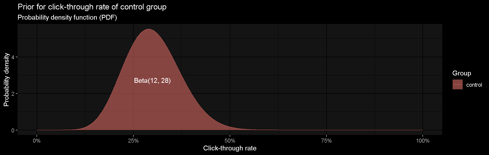
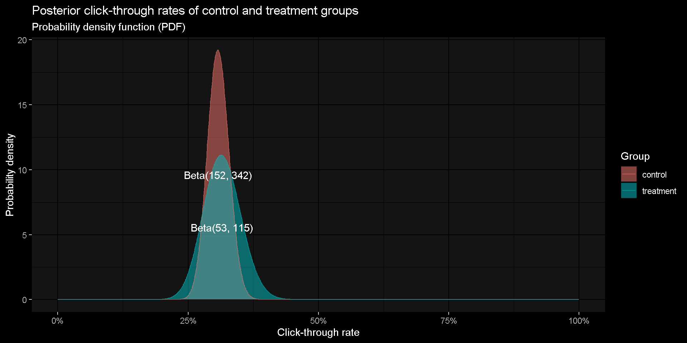
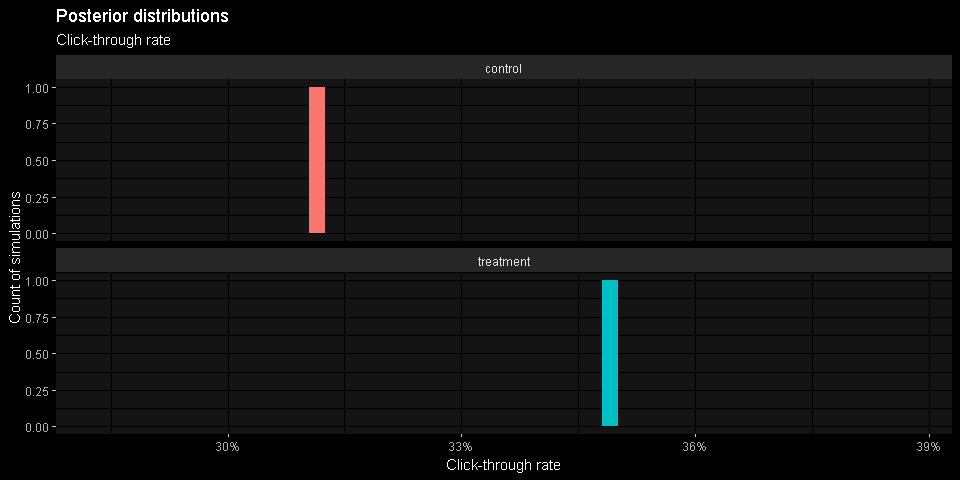
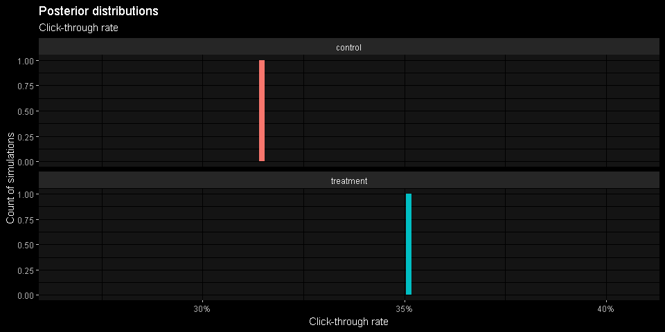
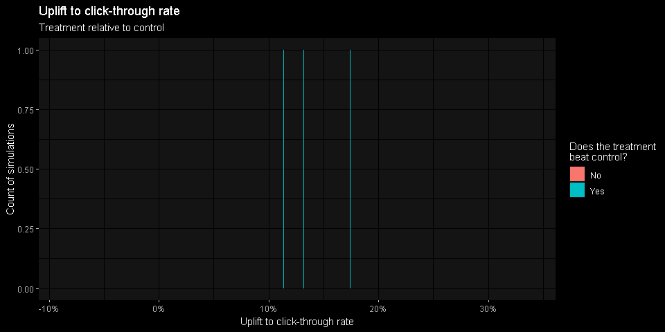

Introduction to Bayesian A/B testing
Johann de Boer
Setting the scene
Randomised Control Trials (RCTs)
A simplistic example:
Users are assigned at random to two groups, A and B, with equal probability.
Let A be our control group and B be our treatment group.
We want to know what effect our treatment has.
Tip
Early on during an experiment, differences between these groups could simply be due to the random allocation of participants. As the groups get larger, these random differences will diminish, bringing us closer to the difference caused by the treatment.
Applying Bayesian inference effectively gives the experiment a guided head start by including more data in the form of priors.
Hypothetical scenario
We have a button on a landing page that takes users to a sign up form.
At present, the button is labelled “Register your interest”.
We want to test whether changing it to “Get started” will result in an increased click-through rate (CTR).
The idea of “Get started” was suggested by an experienced and skilled UX design professional.

Priors and probability distributions
Prior knowledge and beliefs
Before running an experiment, we form opinions about what we expect to see. We gather evidence such as:
The baseline click-through rate of the button (with its current label) and knowledge of any outside variables that affects click-through rate, e.g. seasonality
Effects we have seen from similar previous experiments
Qualitative research, such as usability tests, focus groups, and surveys that are related to the test
Opinions (including critical views) from interested parties, including experts
Priors are probability distributions
We express our prior beliefs about the control group using a probability distribution.
This plot shows an example of an extremely uninformative prior – a uniform prior that says every outcome is equally likely, i.e. naive.
Tip
The Beta distribution is a probability density function (PDF) with two shape parameters: \(B(shape1, shape2)\). It’s used to describe proportions, such as click-through rate.
Something a little more informative
As the curve narrows, notice that the shape parameters of the Beta distribution increase.
Something even more informative

The shape parameters (shape1 and shape2) of the Beta distribution can be considered counts of successes and failures, respectively. Therefore, the mean probability of success (i.e. average click-through rate) can be calculated by this formula:
\[ \frac{shape1}{shape1 + shape2} \]
Let’s say we’ve settled on this:
The more confident we are about our beliefs, the narrower the curve.
What about the treatment group?
We expect that the click-through rates of the treatment and control groups will be correlated.
We don’t know how correlated they will be, but we’re not expecting a dramatic difference between them.
We hope that the click-through rate of the treatment group will be an improvement, but we’re open to other possibilities.
We’re more confident than not that the click-through rate of the treatment group will be an improvement over control.
We don’t want to bias the results of the experiment in favour of treatment or control, or towards a conclusion of there being a difference or no difference.
We’ve settled on these priors:
Running a Bayesian A/B test
Prior agreement
Agreement must be reached on the priors before collecting and analysing data from the experiment.
Once we’ve agreed on the priors and have locked them in, we can start the experiment.
Here’s a summary of the priors we have chosen:
Let’s run a simulated experiment
Let’s pretend that there’s some true theoretical click-through rate for the control and treatment groups, 32% and 35% respectively. That equates to a relative uplift of 9.4%.
Note
Remember that this is just a hypothetical simulation. We wouldn’t know these in a real experiment ¯\_(ツ)_/¯.
If we’re successful at applying Bayesian inference then we should hope to see (but can’t guarantee due to randomness) results that somewhat match with these theoretical CTRs.
1 day since the experiment started…
Let’s pretend that on average 150 users enter our experiment each day, and we’ve received the following data from day 1:
| group | total_users | clicked | not_clicked | CTR |
|---|---|---|---|---|
| control | 62 | 17 | 45 | 27.4% |
| treatment | 97 | 32 | 65 | 33.0% |
Let’s now incorporate our priors
For each experiment group, we derive our posterior shape parameters through simple arithmetic addition:
- Increment the first shape parameter by the count users who had clicked
- Increment the second shape parameter by the count users who didn’t click
| count | control | treatment |
|---|---|---|
| prior_shape1 | 120 | 27 |
| clicked | 17 | 32 |
| posterior_shape1 | 137 | 59 |
| count | control | treatment |
|---|---|---|
| prior_shape2 | 288 | 60 |
| not_clicked | 45 | 65 |
| posterior_shape2 | 333 | 125 |
Posterior distribution of each group
We have now updated our beliefs. These posteriors can now be thought of as our updated priors.
Another six days later…
We’ve now collected more data, so let’s update our priors to form new posteriors.
Another three weeks later…
We’ve now collected even more data, so let’s again update our priors to form new posteriors.
Posterior analysis
Statistical inferences using the posterior distributions
Monte Carlo simulation
We can draw a very very large number of random samples from our posterior distributions to make inferences about the experiment.
This is called Monte Carlo simulation – named after a well known casino.
Note
The more samples drawn, the greater the reliability and precision of the inferences you make, but this comes at the cost of computational time and memory. Nowadays, computer processing speed and memory are more than adequate for what we need.

100 simulations
Let’s start slowly by drawing 100 random samples from our distributions and plotting them using histograms…
Here’s some of our Monte Carlo samples:
| control | treatment | uplift | beats_control |
|---|---|---|---|
| 0.294 | 0.341 | 0.161 | TRUE |
| 0.303 | 0.344 | 0.137 | TRUE |
| 0.310 | 0.368 | 0.189 | TRUE |
| 0.309 | 0.347 | 0.123 | TRUE |
| 0.299 | 0.377 | 0.260 | TRUE |
| 0.288 | 0.350 | 0.214 | TRUE |
| 0.297 | 0.336 | 0.129 | TRUE |

Let’s now beef it up a bit…
We’ll now draw 1 000 000 samples…

We can now make some inferences
Here’s a summary of our posterior predictive distributions as a result of the 1 000 000 simulations:
control treatment uplift beats_control
Min. :0.2550 Min. :0.3031 Min. :-0.03964 Mode :logical
1st Qu.:0.2905 1st Qu.:0.3443 1st Qu.: 0.15030 FALSE:30
Median :0.2966 Median :0.3511 Median : 0.18340 TRUE :999970
Mean :0.2967 Mean :0.3511 Mean : 0.18455
3rd Qu.:0.3028 3rd Qu.:0.3579 3rd Qu.: 0.21760
Max. :0.3392 Max. :0.3970 Max. : 0.46371 What is the probability that the CTR of the treatment is greater than that of control?
Posterior distribution of the CTR uplift
When to stop a Bayesian A/B test?
If using uninformative priors…
If your original priors are uninformative or too weak, then you face the same risks as with frequentist experiments.
Perform power analysis ahead of running the experiment. This is to determine the required sample size before any inferences are made.
Prior to the experiment commencing, decide on:
The minimum detectable effect size
The accepted false positive rate
The accepted false negative rate
If using informative priors…
If your priors are relatively informative and chosen carefully, then this can reduce the chances of false positives and negatives. But:
Be careful to not bias the results of the experiment.
Power analysis is still recommended in order to gauge the worse case scenario for how long the experiment might run.
Bayesian inference, with informative priors, can make it possible to end an experiment early.
If deciding to end early…
Ask yourself:
Has the experiment run for at least a couple of cycles? (e.g. at least two full weeks)
Have the results stabilised? Is there a clear winner?
Could it be worth running longer to learn more?
What are the risks of continuing or ending now? What if the results you see are just a fluke and are therefore misguiding you? What is the impact of making the wrong choice? What are the chances?
Summary and some final remarks
Before starting an experiment
Gather prior knowledge and articulate beliefs:
Establish a baseline - what do you know about the control group?
What do you expect the effect of the treatment to be? How sure are you?
Express those beliefs and knowledge as distributions - these are your priors for your control and treatment groups.
Important
Ensure that the priors encapsulate the collective knowledge and beliefs of all interested parties so that there is agreement. This helps to avoid the results from being challenged later. This is because everyone would have already had an opportunity to provide their opinions.
Running the experiment
Start the experiment, gather data, and update your priors to form posteriors
Draw inferences by running a large number of Monte Carlo simulations using the posteriors
Know when to end the experiment – try to plan for this ahead of running the experiment
Final remarks
Null-hypothesis significance testing (NHST) is not what Bayesian is for:
Bayesian tells you the probability of some effect being within some range, given the data. I.e. Given everything we know so far, what are the risks associated with the choices we have?
NHST tells you the probability of data at least as extreme as what has been observed, given there is no real effect. I.e. How ridiculous would this outcome be if it were due to chance alone?
NHST is often referred to as the frequentist approach, where decisions are made using p-values and some arbitrary threshold \(\alpha\) (i.e. false positive rate).
Unlike NHST, Bayesian A/B testing doesn’t give you a yes/no answer – it instead informs you about the probabilities and risks associated with the choices you have.
Questions?
Tip
These presentation slides and simulations have been produced in RStudio using Quarto. You can download the source code and slides from Github at: https://github.com/jdeboer/measurecamp2022
Johann de Boer - Sydney Measurecamp 2022